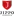
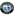
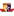
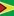
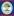
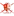

| Date | Fixture |
Odds |
Win |
Result |
Over ⚽ = over 0.5 ⚽⚽ = over 1.5 ⚽⚽⚽ = over 2.5 ... ► |
Alerts Home 🏥 = Considerable injuries 🏥🏥 = Major injuries 📉 = Dip in form Note, you may see injuries when expanding match but no alert here, meaning the model does not consider them important. |
Alerts Away 🏥 = Considerable injuries 🏥🏥 = Major injuries 📉 = Dip in form Note, you may see injuries when expanding match but no alert here, meaning the model does not consider them important. |
|
|---|---|---|---|---|---|---|---|---|
| Mi. 12.06.24 | Viimsi JK 18:00 FC Kuressaare Form: WLLWW Form: DDLLD |
-5.56 vs 4.97 | n/a | 95% | None | ⚽ 1.97 |
📉 Home team has a dip in form recently | 📉 Away team has a dip in form recently |
| Mi. 12.06.24 | Enyimba Aba postponed Bayelsa United Form: WDWWW Form: DLWLW |
0.87 vs -1.37 | n/a | 72% | None | ⚽ 1.44 |
📉 Away team has a dip in form recently | |
| Mi. 12.06.24 | FC KTP 17:30  JIPPO Joensuu Form: WWWWW Form: DWWWD |
0.6 vs -1.1 | n/a | 71% | None | ⚽⚽ 2.34 |
||
| Mi. 12.06.24 | Western Sydney Wanderers II 11:00 Central Coast Mariners II Form: DWDWW Form: LLLLL |
0.6 vs -1.2 | n/a | 71% | None | ⚽⚽⚽⚽ 4.15 |
📉 Away team has a dip in form recently | |
| Mi. 12.06.24 | Guayaquil City FC  1:0 CSD Vargas Torres Form: WLDDD Form: WDLLD |
0.58 vs -1.08 | n/a | 70% | 1 | 😴 0.75 |
📉 Home team has a dip in form recently | 📉 Away team has a dip in form recently |
| Mi. 12.06.24 | Wollongong Wolves FC 11:30 Sutherland Sharks FC Form: WDDWL Form: DLLLL |
0.31 vs -0.81 | n/a | 68% | None | ⚽ 1.92 |
📉 Home team has a dip in form recently | 📉 Away team has a dip in form recently |
| Mi. 12.06.24 | Dreams FC postponed Real Tamale United Form: LWLWD Form: WLLWL |
0.23 vs -0.73 | n/a | 67% | None | ⚽ 1.89 |
📉 Home team has a dip in form recently | 📉 Away team has a dip in form recently |
| Mi. 12.06.24 | Niger Tornadoes postponed Lobi Stars FC Form: WLLDD Form: LDLLL |
0.23 vs -0.73 | n/a | 67% | None | 😴 0.97 |
📉 Home team has a dip in form recently | 📉 Away team has a dip in form recently |
| Mi. 12.06.24 | Thór Akureyri 20:00 Stjarnan Gardabaer Form: WWDLD Form: WLDWW |
-0.7 vs 0.2 | n/a | 67% | None | ⚽ 1.35 |
📉 Home team has a dip in form recently | |
| Mi. 12.06.24 | Kuopion Palloseura 17:00 FC Haka Form: WDWWW Form: WWLWL |
0.2 vs -0.7 | n/a | 67% | None | ⚽ 1.99 |
📉 Away team has a dip in form recently | |
| Mi. 12.06.24 | Blacktown City FC 11:30 Manly United FC Form: WDWWD Form: DWWWL |
0.17 vs -0.68 | n/a | 67% | None | ⚽ 1.44 |
📉 Away team has a dip in form recently | |
| Mi. 12.06.24 | SJK Seinäjoki 17:00 Ekenäs IF Form: WLWWL Form: DLDLL |
0.15 vs -0.65 | n/a | 66% | None | ⚽⚽ 2.59 |
📉 Home team has a dip in form recently | 📉 Away team has a dip in form recently |
| Mi. 12.06.24 | FF Jaro 17:30 SJK Seinäjoki II Form: LLWWD Form: WDWDD |
0.14 vs -0.64 | n/a | 66% | None | ⚽⚽ 2.3 |
📉 Away team has a dip in form recently | |
| Mi. 12.06.24 | Remo Stars FC  postponed FC Heartland Form: LWWLW Form: LWLWL |
0.13 vs -0.63 | n/a | 66% | None | ⚽ 1.1 |
📉 Home team has a dip in form recently | 📉 Away team has a dip in form recently |
| Mi. 12.06.24 | Fagiano Okayama 1:7 Ehime FC Form: LDWWL Form: DDLDL |
0.12 vs -0.67 | n/a | 66% | 0 | ⚽ 1.7 |
📉 Home team has a dip in form recently | 📉 Away team has a dip in form recently |
| Mi. 12.06.24 | Salon Palloilijat 17:30 Käpylän Pallo Form: DLLDD Form: DWLDL |
0.11 vs -0.61 | n/a | 66% | None | ⚽⚽ 2.09 |
📉 Home team has a dip in form recently | 📉 Away team has a dip in form recently |
| Mi. 12.06.24 | AC Oulu 17:00 FC Lahti Form: WDDLW Form: WWDLL |
0.08 vs -0.6 | n/a | 66% | None | ⚽⚽ 2.19 |
📉 Home team has a dip in form recently | 📉 Away team has a dip in form recently |
| Mi. 12.06.24 | CA Huracán unbekannt CS Independiente Rivadavia Form: WWDWW Form: LWDWL |
0.06 vs -0.75 | n/a | 66% | None | ⚽ 1.01 |
📉 Away team has a dip in form recently | |
| Mi. 12.06.24 | Guyana  3:1  Belize Form: WWLWL Form: DWLDW |
0.05 vs -0.55 | n/a | 65% | 1 | ⚽ 1.83 |
📉 Home team has a dip in form recently | 📉 Away team has a dip in form recently |
| Mi. 12.06.24 | Marconi Stallions FC 11:30 Sydney Olympic FC Form: LWWDL Form: LDWDL |
0.04 vs -0.54 | n/a | 65% | None | ⚽⚽⚽ 3.45 |
📉 Home team has a dip in form recently | 📉 Away team has a dip in form recently |
| Mi. 12.06.24 | Stabæk Fotball postponed Mjøndalen IF Form: WDDLL Form: LWLLD |
0.02 vs -0.67 | n/a | 65% | None | ⚽⚽ 2.14 |
📉 Home team has a dip in form recently | 📉 Away team has a dip in form recently |
| Mi. 12.06.24 | Blaublitz Akita 0:2 Iwaki FC Form: LWLDD Form: WDLWD |
0.02 vs -0.62 | n/a | 65% | 0 | ⚽ 1.06 |
📉 Home team has a dip in form recently | 📉 Away team has a dip in form recently |
| Mi. 12.06.24 | Fujieda MYFC 2:0 Tochigi SC Form: WWLDW Form: LLLDL |
0.01 vs -0.59 | n/a | 65% | 1 | ⚽ 1.46 |
📉 Home team has a dip in form recently | 📉 Away team has a dip in form recently |
| Mi. 12.06.24 | Sydney United 58 FC 11:30 NWS Spirit Form: LDWLW Form: WLWDD |
0.01 vs -0.51 | n/a | 65% | None | ⚽⚽ 2.46 |
📉 Home team has a dip in form recently | 📉 Away team has a dip in form recently |
| Mi. 12.06.24 | Kwara United FC postponed Kano Pillars Form: WDDWD Form: LWLWL |
0.0 vs -0.5 | n/a | 65% | None | ⚽ 1.1 |
📉 Home team has a dip in form recently | 📉 Away team has a dip in form recently |
| Mi. 12.06.24 | San Antonio FC 22:00 Club Leones del Norte Form: DDDDL Form: LDDDW |
-0.01 vs -0.56 | n/a | 49% | None | 😴 0.74 |
📉 Home team has a dip in form recently | 📉 Away team has a dip in form recently |
| Mi. 12.06.24 | Botafogo Rio de Janeiro 1:0 Fluminense Rio de Janeiro Form: WDWWD Form: WLWWW |
-0.01 vs -0.49 | n/a | 49% | 1 | ⚽⚽ 2.44 |
||
| Mi. 12.06.24 | Shooting Stars SC postponed Enugu Rangers IFC Form: WLWDW Form: WLWWD |
-0.02 vs -0.48 | n/a | 48% | None | ⚽ 1.32 |
||
| Mi. 12.06.24 | Sporting Lagos FC postponed Plateau United FC Form: WLWLD Form: LWLDL |
-0.03 vs -0.47 | n/a | 47% | None | ⚽ 1.43 |
📉 Home team has a dip in form recently | 📉 Away team has a dip in form recently |
| Mi. 12.06.24 | Gombe United FC postponed  Abia Warriors FC Form: LLWLL Form: WLWLL |
-0.47 vs -0.03 | n/a | 47% | None | ⚽ 1.66 |
📉 Home team has a dip in form recently | 📉 Away team has a dip in form recently |
| Mi. 12.06.24 | Oita Trinita 1:0 Kagoshima United Form: DDDDL Form: LLLDD |
-0.03 vs -0.67 | n/a | 47% | 1 | ⚽ 1.35 |
📉 Home team has a dip in form recently | 📉 Away team has a dip in form recently |
| Mi. 12.06.24 | Red Bull Bragantino 1:2 Clube Atlético Mineiro Form: WLWWD Form: DWWLL |
-0.04 vs -0.46 | n/a | 46% | 0 | ⚽ 1.55 |
📉 Away team has a dip in form recently | |
| Mi. 12.06.24 | EC Juventude 1:1 Esporte Clube Vitória Form: DWLDD Form: LLLLL |
-0.05 vs -0.45 | n/a | 45% | 0.5 | ⚽ 1.34 |
📉 Home team has a dip in form recently | 📉 Away team has a dip in form recently |
| Mi. 12.06.24 | Mirassol FC (SP) 1:0 Goiás EC Form: DWDWL Form: WDWDL |
-0.06 vs -0.44 | n/a | 44% | 1 | ⚽ 1.16 |
📉 Home team has a dip in form recently | 📉 Away team has a dip in form recently |
| Mi. 12.06.24 | Tokushima Vortis 1:0 Vegalta Sendai Form: WWLDW Form: WWWLW |
-0.07 vs -0.55 | n/a | 43% | 1 | ⚽ 1.38 |
📉 Home team has a dip in form recently | 📉 Away team has a dip in form recently |
| Mi. 12.06.24 | Mikkelin Palloilijat 17:30 Turun Palloseura Form: WLLLD Form: DWLLW |
-0.43 vs -0.07 | n/a | 43% | None | ⚽⚽ 2.11 |
📉 Home team has a dip in form recently | 📉 Away team has a dip in form recently |
| Mi. 12.06.24 | Gimnasia y Esgrima de Jujuy postponed CA Chacarita Juniors Form: WLWLW Form: LLDLW |
-0.09 vs -0.42 | n/a | 41% | None | ⚽ 1.15 |
📉 Home team has a dip in form recently | 📉 Away team has a dip in form recently |
| Mi. 12.06.24 | CD Godoy Cruz Antonio Tomba 22:00 CA Rosario Central Form: LLLDD Form: LWDWL |
-0.12 vs -0.56 | n/a | 38% | None | 😴 0.77 |
📉 Home team has a dip in form recently | 📉 Away team has a dip in form recently |
| Mi. 12.06.24 | FC Inter Turku 17:00 Ilves Tampere Form: LLLLW Form: WWWDL |
-0.13 vs -0.37 | n/a | 37% | None | ⚽⚽ 2.03 |
📉 Home team has a dip in form recently | 📉 Away team has a dip in form recently |
| Mi. 12.06.24 | Chacaritas FC 22:00 AD Nueve de Octubre Form: WWLWD Form: LWLWD |
-0.36 vs -0.14 | n/a | 36% | None | ⚽ 1.19 |
📉 Home team has a dip in form recently | 📉 Away team has a dip in form recently |
| Mi. 12.06.24 | Roasso Kumamoto 1:2 Mito HollyHock Form: LDWLW Form: WWDLL |
-0.14 vs -0.5 | n/a | 36% | 0 | ⚽ 1.54 |
📉 Home team has a dip in form recently | 📉 Away team has a dip in form recently |
| Mi. 12.06.24 | St George Saints FC 12:00 Rockdale Ilinden FC Form: LD Form: WDWWD |
-0.36 vs -0.14 | n/a | 36% | None | 😴 0.9 |
📉 Home team has a dip in form recently | |
| Mi. 12.06.24 | APIA Leichhardt FC 11:45 St. George City FA Form: LLWLL Form: DWWLL |
-0.16 vs -0.34 | n/a | 34% | None | ⚽⚽ 2.89 |
📉 Home team has a dip in form recently | 📉 Away team has a dip in form recently |
| Mi. 12.06.24 | AC Goianiense 2:2 Corinthians São Paulo Form: DWLWW Form: WLWWW |
-0.16 vs -0.37 | n/a | 34% | 0.5 | ⚽⚽ 2.16 |
📉 Home team has a dip in form recently | |
| Mi. 12.06.24 | Bendel Insurance postponed Rivers United FC Form: WDWDW Form: LLWWL |
-0.19 vs -0.31 | n/a | 31% | None | 😴 0.68 |
📉 Away team has a dip in form recently | |
| Mi. 12.06.24 | Thespa Gunma 3:4 after pensafter pens Renofa Yamaguchi Form: LLLDD Form: WWWDW |
-0.19 vs -0.51 | n/a | 31% | 0 | 😴 0.8 |
📉 Home team has a dip in form recently | |
| Mi. 12.06.24 | IF Gnistan 18:00 HJK Helsinki Form: DDLDW Form: WLWDL |
-0.3 vs -0.2 | n/a | 30% | None | ⚽⚽ 2.6 |
📉 Home team has a dip in form recently | 📉 Away team has a dip in form recently |
| Mi. 12.06.24 | IFK Mariehamn 17:00 Vaasan Palloseura Form: WLDDW Form: LWLWW |
-0.32 vs -0.23 | n/a | 27% | None | ⚽ 1.36 |
📉 Home team has a dip in form recently | 📉 Away team has a dip in form recently |
| Mi. 12.06.24 | Chile 3:0 Paraguay Form: WLDLW Form: LLWDL |
-0.31 vs -0.76 | n/a | 19% | 1 | 😴 -0.35 |
🏥🏥 📉 Home team has MAJOR injuries and a dip in form recently | 🏥 📉 Away team has considerable injuries and a dip in form recently |
Last updated 15:03:16 2024-06-12
Privacy Policy - 18+. Gamble Responsibly. - Terms